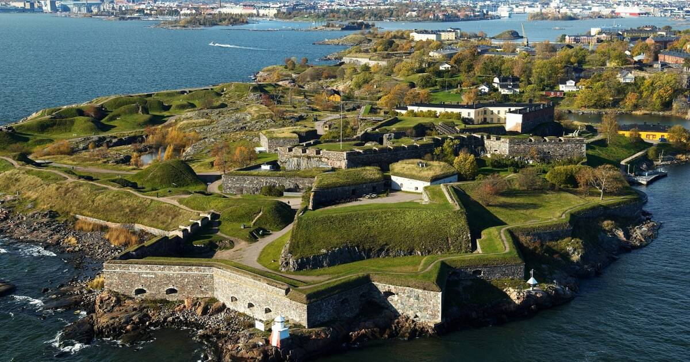
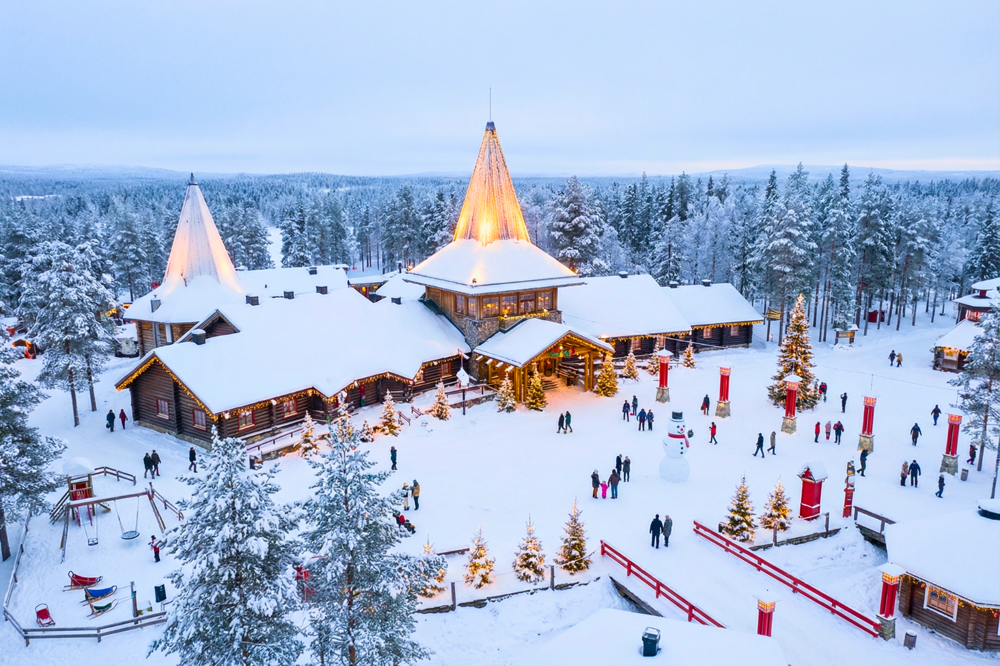
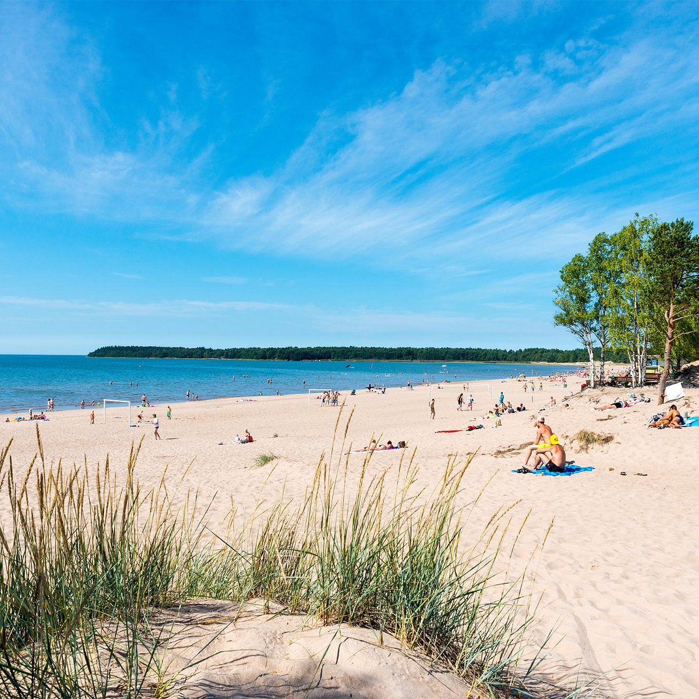
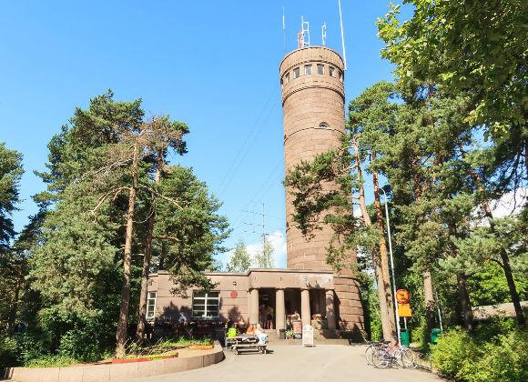

Suomenlinna Fortress
A historic sea fortress near Helsinki with island walks, museums, sea views, and UNESCO heritage charm.
Top attractions and must-see places you should not miss when visiting Finland.

A historic sea fortress near Helsinki with island walks, museums, sea views, and UNESCO heritage charm.

Finland’s most famous Lapland attraction where visitors meet Santa Claus and cross the Arctic Circle.

One of Finland’s best beaches with wide sandy coastlines, dunes, and summer atmosphere.

A beautiful medieval castle surrounded by lakes and one of Finland’s most iconic landmarks.

One of Finland’s most scenic mountain landscapes with unforgettable northern views.

Finland’s most famous hiking destination with forests, rivers, waterfalls, and wooden bridges.
A famous white cathedral in the heart of Helsinki and one of Finland’s best-known city landmarks.

A popular Tampere viewpoint with lake scenery and Finland’s famous doughnuts.